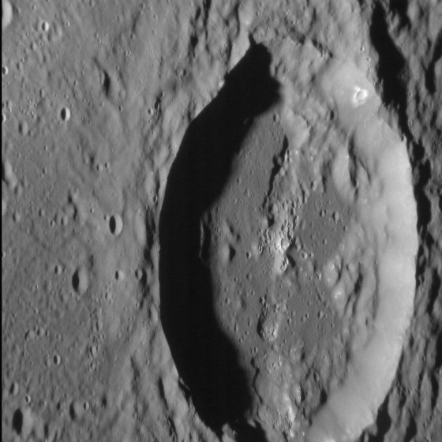
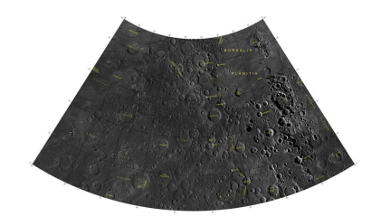
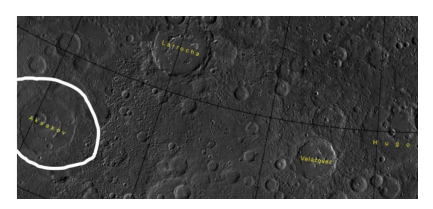
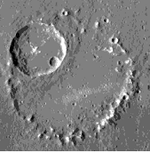
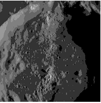

Цифровой музей
Сергея Тимофеевича Аксакова
Жизнь Аксакова

Портрет работы И. Крамского, 1878
Детство и юность
Родился 20 сентября 1791 года в Уфе в дворянской семье. Детство провёл в родовом имении Ново-Аксаково.
Учился в Казанской гимназии, затем в Казанском университете, но не окончил его.
Творческий путь
Первые литературные опыты - стихи и театральные рецензии. Известность приобрёл как автор книг о рыбалке и охоте.
Вершина творчества - автобиографическая трилогия: "Семейная хроника", "Детские годы Багрова-внука", "Воспоминания".
Семья и окружение
Был женат на Ольге Семёновне Заплатиной, имел 10 детей. Его сыновья Константин и Иван стали известными славянофилами.
Дружил с Гоголем, Тургеневым, Тютчевым.
Основные даты
- 1791 - Родился в Уфе
- 1805 - Поступил в Казанскую гимназию
- 1807 - Начал учёбу в Казанском университете
- 1816 - Женитьба на Ольге Заплатиной
- 1847 - Публикация "Записок об уженье рыбы"
- 1856 - Выход "Семейной хроники"
- 1859 - Скончался в Москве
Космическое наследие
Почему кратер назван в честь писателя?
Его название было принято Международным астрономическим союзом (IAU) 24 апреля 2012 года. Аксаков назван в честь русского писателя Сергея Аксакова, который жил с 1791 по 1859 год н.э.
Кратер Аксакова - один из 110 пиковых кольцевых бассейнов на Меркурии. На основе изучения научной литературы заметили, что остроконечный кратер Аксакова наглядно показывает, что особо заметно кольцо центрального пика, а яркие пятна - это впадины.
{kind=link}
Общий вид кратера (NASA)
{kind=link}
Бассейн Аксакова
{kind=link}
Четырехугольник Виктории
{kind=link}
Расположение кратера
{kind=link}
Кольцо центрального пика
{kind=link}
Впадины внутри кратера
Основные сведения о кратере
| Дата получения | 20 января 2015 г. |
| Расположение | Четырехугольник Виктории, Меркурий |
| Диаметр | 173.6 км (108 миль) |
| Космический корабль | MESSENGER |
Дополнительные данные
| Дата получения | 12 февраля 2013 г. |
| Космический корабль | MESSENGER |
| Произведено | Университет Джонса Хопкинса |
| Диаметр | 173 км |
Кольцо пиков
Бассейн Аксакова или впадина Аксакова были названы в 2012 году и имеет заметное кольцо пиков, в котором расположены многочисленные впадины. Большая часть его пикового кольца отсутствует, однако она была разрушена при образовании кратера на этом изображении. Но у этого кратера есть свои интересные особенности, в том числе обвалы стен и впадины на гладком дне.
Научные наблюдения
Это изображение было получено в результате целенаправленного наблюдения с высоким разрешением. Целевые наблюдения представляют собой изображения небольшой области на поверхности Меркурия с разрешением, намного превышающим базовую морфологическую карту с разрешением 200 метров на пиксель. Невозможно охватить всю поверхность Меркурия с таким высоким разрешением, но обычно каждую неделю в этом режиме фотографируются несколько областей, представляющих большой научный интерес.
Впадины присутствуют вдоль частей пикового кольца и внутри безымянного 30-километрового кратера внутри.
3D-Галерея
Галерея
{kind=link}
Мемориальный дом-музей

Усадьба Аксакова в Уфе
{kind=link}
Здание Казанского университета начала 19 века
{kind=link}
Первая изданная книга
{kind=link}
Музей семьи Аксаковых
{kind=link}
Музей семьи Аксаковых
{kind=link}
Памятник Сергею Аксакову-город Москва
{kind=link}
Аксаков
{kind=link}
Родители Аксакова
{kind=link}
Детские годы Багрова-внука
{kind=link}
Книги Аксакова
{kind=link}
От Пушкина до Толстого
{kind=link}
Рассказы о природе
{kind=link}
Библиотека мировой литературы для детей
Спасибо за внимание!
Благодарим вас за интерес к наследию С.Т. Аксакова и его космическому следу в истории.
Присоединяйтесь к нашему Telegram-каналу, чтобы не пропустить новые материалы:
Подписаться